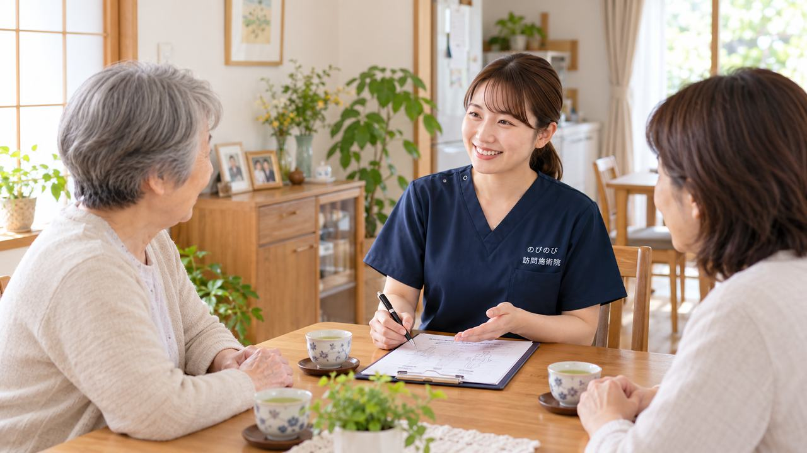

入院から退院、そして在宅での生活へ移る時期は、ご本人もご家族も気持ちと段取りに追われがちです。退院してから痛みやしびれで通院がむずかしいと気づいてサービスを探し始めると、体制が整うまでに時間がかかることがあります。ここでは、退院前からどう動くとよいか、退院支援室や医療ソーシャルワーカーとどう関わるか、在宅のケアへどうつなぐかを順にご説明します。
短くまとめます。まだ受けるかどうか迷っている段階でも、選択肢のひとつとして相談しておくと、退院後の動きを決めるときに迷いにくくなります。
退院してから探すより、退院前に動いたほうがよいでしょうか
役立つのは、退院前からの準備です。入院中に「退院後は在宅で鍼灸のケアを受けたい」という希望を伝えておくと、病院側と在宅側の引き継ぎがスムーズになります。
退院まで残り数日という段階でも、担当の看護師さんや医療ソーシャルワーカーに一言添えておくだけで、退院後にサービスを一から探す手間が省けます。まだ受けるかどうか迷っている段階でも、選択肢のひとつとして相談しておくと、退院後の動きを決めるときに迷いにくくなります。
とくに、退院と同時にご家族が仕事へ戻る、遠方に住んでいて頻繁には通えない、といった事情がある場合は、早めのご相談がそのまま安心につながります。
退院時カンファレンスでは、何を確認しておけばよいでしょうか
退院時カンファレンスは、退院を控えた方について、退院後の生活と支援の方針を共有する話し合いの場です。病院の医師・看護師・医療ソーシャルワーカーに加え、在宅を支えるケアマネジャーや訪問系のサービス事業者などが集まります。
この場で「自宅での痛み・しびれのケアをどうするか」「通院がむずかしい場合にどんな在宅サービスがあるか」を確認しておくと、退院後の生活像が具体的になります。カンファレンスの時間は限られていますので、聞きたいことを事前にメモにしておくと、伝え漏れを防げます。
退院後も痛みが続きそうか、体を起こしたり歩いたりする力はどのくらい戻っているか。こうした点は、在宅のケアを組み立てるうえで大切な情報です。訪問での鍼灸も、在宅で受けられるケアの選択肢のひとつとして、この話し合いのなかで検討していただけます。
退院支援室・医療ソーシャルワーカーの役割
多くの病院には退院支援室（地域連携室などと呼ばれることもあります）が置かれ、医療ソーシャルワーカーが在籍しています。退院後の療養先や在宅サービス、公的な制度の利用について、ご本人やご家族の相談にのる専門職です。
退院後も体の痛みが続きそうで不安、通院が体力的にむずかしい。そうしたことは、遠慮なくお伝えいただいて構いません。在宅で受けられるケアの情報を整理してくれますので、そのなかで訪問での鍼灸についても話題にしていただけると、こちらへの橋渡しがしやすくなります。
在宅のケアへ橋渡しする流れ
退院後に施術を受ける場合の流れです。まず、退院前後にご本人・ご家族、またはケアマネジャーや退院支援室を通じてご相談いただきます。次に、対象になりそうかを確認し、医師の同意書に関する手続きを進めます。
対象になるのは、医師が施術を必要と認めた慢性的な痛みやしびれなどがあり、ご自身で通院するのがむずかしい方です。同意書のやりとりはこちらでお手伝いしますので、ご家族だけで病院とすべてを調整する必要はありません。退院支援室との間で情報を共有しながら、無理のない形で在宅のケアへつないでいきます。対象になる方の条件は誰が受けられる？にまとめています。
のびのびで行っていること
保険を使って行っているのは、はり・きゅうをベースにした施術です。その日の体の状態を確認しながら、必要に応じて手技やストレッチ、無理のない範囲で身体を動かす運動なども組み合わせます。これらについて別途の料金はいただきません。
退院直後で体を動かしにくい時期でも、その方の状態に合わせて、負担にならない範囲で進めていきます。医療機関での治療が主で、訪問での施術はそれを支える立場です。
退院直後の在宅生活で、気をつけたいこと
退院直後は、入院前より体力や筋力が落ちていることがよくあります。ベッドから起き上がる、トイレまで歩くといった日常の動作が、以前よりつらく感じられることもあります。無理をして転倒などにつながらないよう、環境を整えることが肝心です。
定期的に体をみる機会があると、こうした変化に早めに気づきやすくなります。痛むところだけでなく体全体をみるなかで、気になる点があればご家族やケアマネジャーと共有し、必要に応じて主治医へのご相談をおすすめすることもあります。
ご家族が用意しておくと役立つもの
退院前に少し準備をしておくと、在宅でのケアが始めやすくなります。お薬手帳や退院時にもらう診療情報提供書などは、体の状態を正しく把握するうえで手がかりになります。ふだん飲んでいるお薬、これまでにかかった病気、退院時の主治医の名前が分かるようにしておくと、同意書の手続きや主治医との連絡もスムーズです。
施術を受ける部屋にある程度の広さがあると、横になったままでも無理なく進められます。ベッドの周りを片づけておく、動線に物を置かないといった小さな工夫が、転倒を防ぐことにもつながります。準備が整わなくても、まずはご相談のなかで一緒に整理していきますので、気負わずにお声がけください。
費用とうかがえる地域
1回の総額は3,950円、自己負担は1割負担の方でおよそ395円、2割の方で790円が目安です。介護保険の支給限度額とは別枠で扱われますので、介護保険のサービスをすでに使っている方でも、限度額とは別に併用しやすいのが特徴です。お支払いは月ごとにまとめ、内訳がわかる明細をお渡しします。負担割合ごとの金額とひと月の目安は、料金のページで計算しています。
うかがえるのは、豊中・吹田・茨木・箕面・摂津・池田、尼崎・伊丹、大阪市の淀川区・東淀川区・都島区・北区・旭区です。退院先のご自宅がこのエリア内であれば、退院前のご相談からお受けできます。退院支援室やケアマネジャー経由でも、ご家族から直接でも構いません。
よくある質問
退院後すぐに始めたいのですが、間に合いますか？
退院支援室や主治医と連携しながら、退院後の在宅ケアへの橋渡しを進めます。退院前にご相談いただければ、より早く始めやすくなります。
入院中から相談できますか？
はい。退院後の見通しを一緒に立てられますので、まずはご相談ください。
退院後でも保険で受けられますか？
退院後の慢性的な痛みやしびれ、麻痺にともなうこわばりについて医師が必要と認め、通院がむずかしいなど所定の要件を満たす場合に、対象となることがあります。
病院とやり取りしてもらえますか？
ご希望に応じて、退院支援室や主治医と必要な連絡を取り合います。
介護保険のサービスを使っていても受けられますか？
医療保険の枠は介護保険の区分支給限度基準額とは別枠のため、併用できることが多いです。